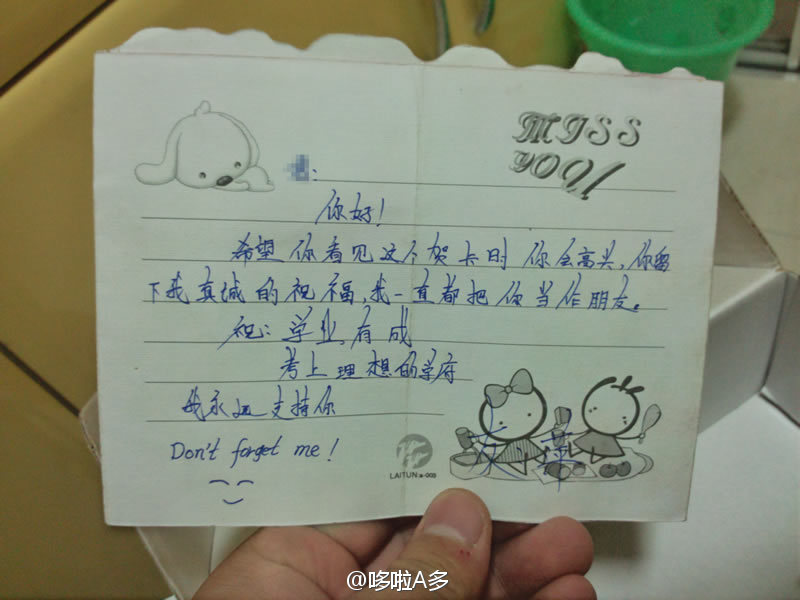

请你们叫我李怀旧。。我家有个盒子，今天找东西的时候又看到了它，里面好多东西。。比较有代表性的是北京地铁的3元车票，，前女友的朋友写给前女友的信，第一次去北京的火车票，14年前的团员证，一堆双色球彩票，还有曾经追过的一女孩儿的同学写给我的贺卡，而且不知所云……[ppb鼓掌] 
作业本知道的太多了。 //@作业本:无疾而终是很多爱情的必然结果，戛然而止是一些感情的最好结局。电影名字叫：我想和你好好的，实际上告诉人们的是：我们为什么没能好好在一起。。。---:抱歉，此微博已被作者删除。查看帮助： 网页链接